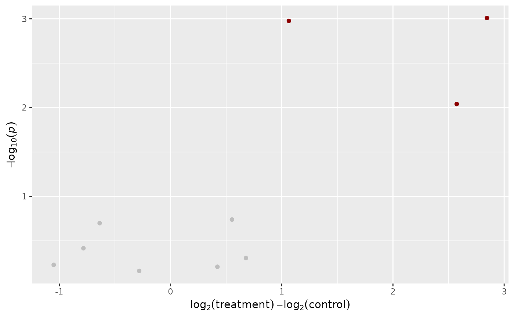

Draws a Volcano Plot or performs calculations necessary to draw one manually
Source:R/plot.R
plot_volcano.RdPerforms necessary calculations (i.e., calculate p-values and log2-fold changes) and creates a basic Volcano Plot.
The plot is drawn with ggplot2 and can therefore be easily manipulated afterwards (e.g., changing the theme or the axis labels).
Please note that the function is intended to be easy to use and beginner friendly and therefore offers limited ability to fine-tune certain parameters of the resulting plot.
If you wish to draw the plot yourself, you can set return_tbl = TRUE. In this case, a tibble is returned instead of a ggplot2 object which you can use to create a plot yourself.
A Volcano Plot is used to compare two groups. Therefore grouping information must be provided. See join_metadata for more information.
Usage
plot_volcano(
data,
group_column,
name_column,
groups_to_compare,
batch_column = NULL,
batch = NULL,
log2fc_cutoff = 1,
p_value_cutoff = 0.05,
colors = list(sig_up = "darkred", sig_down = "darkblue", not_sig_up = "grey",
not_sig_down = "grey", not_sig = "grey"),
adjust_p = FALSE,
log2_before = FALSE,
return_tbl = FALSE,
...
)Arguments
- data
A tidy tibble created by
read_featuretable.- group_column
Which column should be used for grouping? Usually
group_column = Group. Usesargs_data_masking.- name_column
Which column contains the feature names? Can for example be
name_column = UIDorname_column = Feature. Usesargs_data_masking.- groups_to_compare
Names of the groups which should be compared as a character vector. Those are the group names in the
group_column. They are usually provided in the form of a metadata tibble and joined viajoin_metadata.- batch_column
Which column contains the batch information? Usually
grouping_column = Batch. Only relevant ifdatacontains multiple batches. For example, ifdatacontains 2 batches and each batch contains measurements of separate controls,group_columnandbatcharguments should be provided. Otherwise controls of both batches will be considered when calculating the p-value and log2 fold change. Usesargs_data_masking.- batch
The names of the batch(es) that should be included when calculating p-value and log2 fold change.
- log2fc_cutoff
A numeric. What cutoff should be used for the log2 fold change? Traditionally, this is set to
1which corresponds to a doubling or halving of intensity or area compared to a control. This is only important for assignment to groups and colors defined in thecolorsargument.- p_value_cutoff
A numeric. What cutoff should be used for the p-value? Traditionally, this is set to
0.05. This is only important for assignment to groups and colors defined in thecolorsargument. Note that this is not the -log10 transformed value.- colors
A named list for coloring the dots in the Volcano Plot or
NULLin case the points should not be colored. The list must contain colors for the following groups:sig_up,sig_down,not_sig_up,not_sig_downandnot_sig.- adjust_p
Should the p-value be adjusted? Can be either
FALSE, (the default) in case no adjustment should be made or any or the name fromp.adjust.methods(e.g.,adjust_p = "fdr").- log2_before
A logical. Should the data be log2 transformed prior to calculating the p-values?
- return_tbl
A logical. If
FALSE, returns a ggplot2 object, ifTRUEreturns a tibble which can be used to draw the plot manually to have more control.- ...
Arguments passed on to
t.test. If none are provided (the default), a Welch Two Sample t-test will be performed.
Examples
# returns a Volcano Plot in the form of a ggplot2 object
toy_metaboscape %>%
impute_lod() %>%
join_metadata(toy_metaboscape_metadata) %>%
plot_volcano(
group_column = Group,
name_column = Feature,
groups_to_compare = c("control", "treatment")
)

# returns a tibble to draw the plot manually
toy_metaboscape %>%
impute_lod() %>%
join_metadata(toy_metaboscape_metadata) %>%
plot_volcano(
group_column = Group,
name_column = Feature,
groups_to_compare = c("control", "treatment"),
return_tbl = TRUE
)
#> # A tibble: 10 × 5
#> UID Feature log2fc p_val n_log_p_val
#> <int> <chr> <dbl> <dbl> <dbl>
#> 1 1 161.10519 Da 26.98 s 0.678 0.494 0.306
#> 2 2 276.13647 Da 27.28 s -0.637 0.200 0.699
#> 3 3 304.24023 Da 32.86 s 2.85 0.000981 3.01
#> 4 4 417.23236 Da 60.08 s -0.784 0.384 0.416
#> 5 5 104.10753 Da 170.31 s 0.553 0.182 0.739
#> 6 6 105.04259 Da 199.80 s 0.421 0.620 0.208
#> 7 7 237.09204 Da 313.24 s 2.57 0.00912 2.04
#> 8 8 745.09111 Da 382.23 s -0.282 0.691 0.161
#> 9 9 427.02942 Da 424.84 s 1.06 0.00106 2.98
#> 10 10 1284.34904 Da 498.94 s -1.05 0.590 0.229